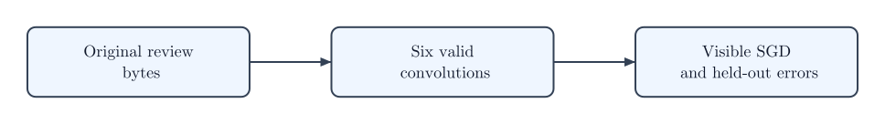
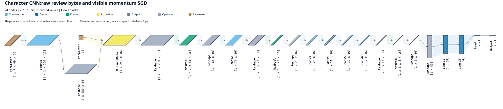
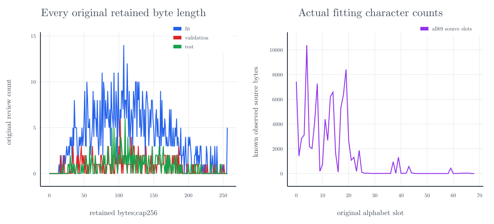
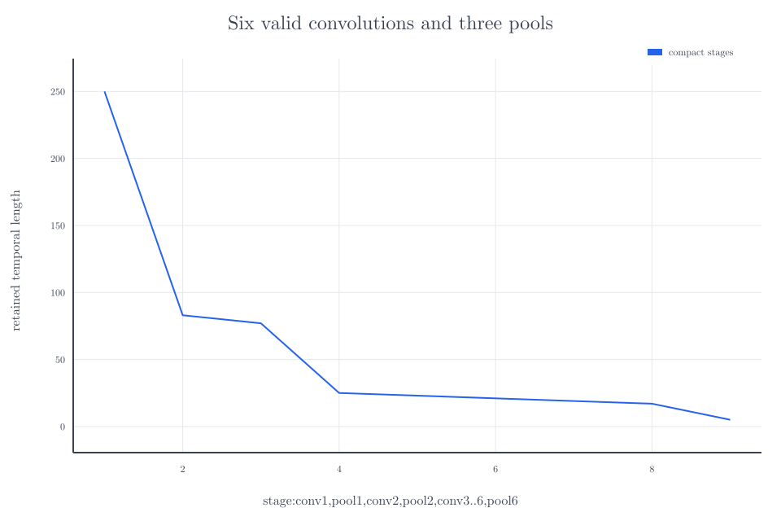
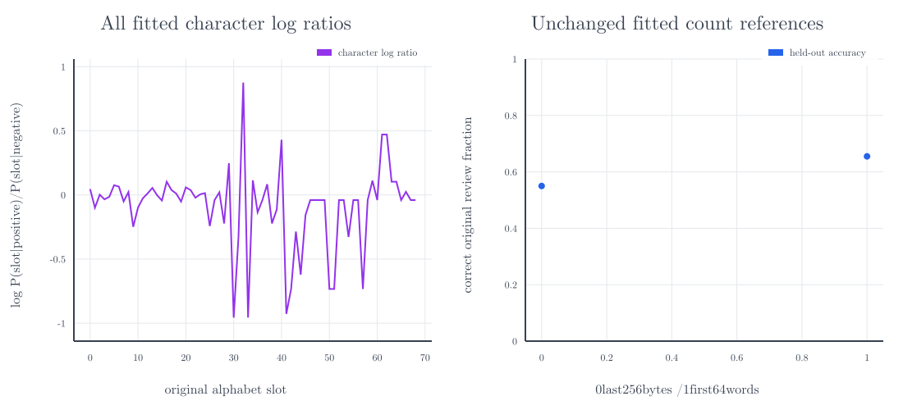
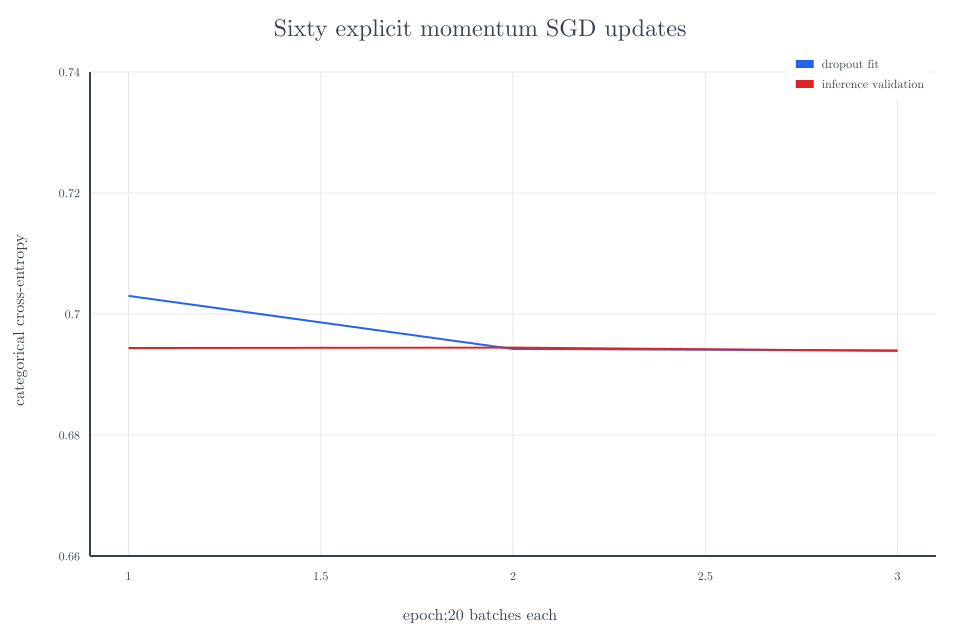
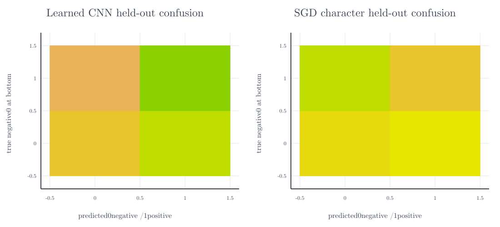
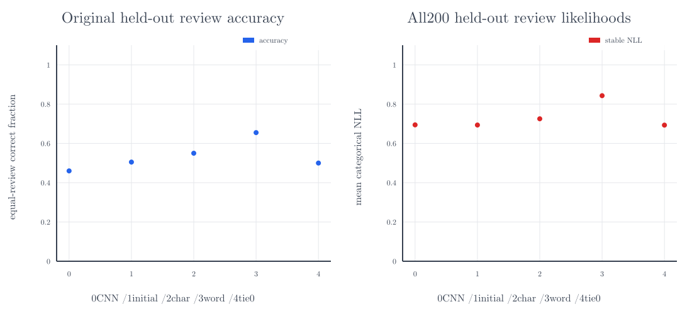
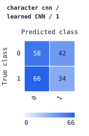

Character CNN:raw review bytes and visible momentum SGD
Abstract
Original movie-review bytes feed fixed onehot ingress and the full six-convolution topology. Explicit tensor count fits and all60 momentum SGD updates expose poor held-out results and the different word/byte observation views.
Source example: examples/cpp/source/nn/1_convolutional_neural_networks/1.9_1d_convolutions/character_cnn.cpp.
The method
Reverse the last256 raw source bytes,mask unknown/padded positions,and apply six valid convolutions with three pools and two dense dropout layers. Show tensor Momentum SGD directly,select on validation CE,and restore18 leaves for independent character-only inference.
The concept diagram below is drawn by dm::graphics::Diagram. Its editable C++
source is the complete block below; regeneration uses the same datamunge toolchain
as the numerical examples. Exports consume the saved local SVG.
#include <dm/dm.hpp>
int main() {
std::filesystem::create_directories("build");
dm::graphics::Diagram diagram;
diagram.node("n0", {0.0, 0}, "Original review\n bytes");
diagram.node("n1", {5.2, 0}, "Six valid\n convolutions");
diagram.node("n2", {10.4, 0}, "Visible SGD\n and held-out errors");
diagram.edge("n0", "n1").edge("n1", "n2");
diagram.save_svg("build/character_cnn_concept.svg");
}
Executed tensor architecture
The shape probe fixes token indices and lengths. Integer indexing and one-hot constants are outside the differentiable trace; the figure displays the learned embedding/convolution/classifier dependency path. The explicit token-inventory configuration above is not a fitted vocabulary.
This figure executes the inference configuration shown in the code, using a zero-valued shape probe without fitting or loading a checkpoint. Named stage boundaries group whole subgraphs where available; other nodes retain functional-layer detail. Exact batch-inclusive shapes and reachable parameter totals come from the trace. Shared linear scales map spatial dimensions and channel counts to blocks; the one-pixel visibility floor is disclosed in the legend. Labels use compact monospace text, rotate counterclockwise and sit beside their own glyphs. Arrows flow left to right; wide diagrams scroll at native size on the website.
#include <dm/dm.hpp>
int main() {
namespace n = dm::nn;
namespace m = n::models;
n::set_num_threads(2);
std::filesystem::create_directories("build");
n::ParameterStore p(2);
const m::CharacterConfig c{256, 16, 64, 69};
n::Module architecture_model(
[&](const n::Tensor& image) {
return m::CharacterCnn(p, image.to(n::DType::Int32), n::ones({1}, n::DType::Int32), c)
.logits;
},
"Character CNN:raw review bytes and visible momentum SGD");
n::ModelPlotOptions options;
options.style = n::ModelPlotStyle::Flow;
options.detail = n::ModelPlotDetail::Blocks;
options.labels = {.type = n::ModelPlotLabel::NameAndShape, .size = 12, .wrap = 24};
options.spacing = {.layer = 24, .lane = 12, .label = 8, .margin = 20};
options.sizing.spatial_size = 96;
options.sizing.channel_size = 42;
options.sizing.minimum_extent = 1;
options.opacity = .8;
const auto diagram = architecture_model.plot(n::zeros({1, c.time}), options);
diagram.save_svg("build/character_cnn_architecture.svg");
std::print(
"{} displayed nodes; {} reachable learned values.\n",
diagram.nodes().size(),
diagram.parameter_count());
}24 displayed nodes; 22162 reachable learned values.

Original review bytes, aligned with the word CNN
The official Pang/Lee MR v1.0 archive contains5331 negative and5331 positive snippets. Retain the exact same original source IDs and binary labels as the word CNN:1000 fitting,200 validation,200 test,balanced within every pool. Fitting-only ASCII word vocabulary and duplicate-group selection use source std::mt19937seed337. This is a custom holdout,not published cross-validation and not verified movie/author independence. Original Latin1 bytes remain in the source archive and manifest;the UTF8 reviews.tsv is presentation metadata.
#include <dm/dm.hpp>
int main() {
const std::filesystem::path cache = dm::datasets::data_home();
dm::datasets::prepare_example_data("text", cache);
}Take the last256 source bytes,reverse them,and lowercase ASCII letters only. The source alphabet has69 slots,including a repeated hyphen;the last matching slot wins. Unknown bytes,spaces and padding have ID-1 and all-zero onehot vectors. This is byte preprocessing,not Unicode grapheme tokenization. The word reference observes the first64 tokens while this CNN observes the last256 bytes,so their comparison changes both representation and model.
#include <dm/dm.hpp>
int main() {
namespace n = dm::nn;
namespace m = n::models;
n::set_num_threads(2);
std::filesystem::path cache;
if (const auto *p = std::getenv("DATAMUNGE_DATA_DIR"))
cache = p;
else if (const auto *p = std::getenv("XDG_CACHE_HOME"))
cache = std::filesystem::path(p) / "datamunge/datasets";
else
cache = std::filesystem::path(std::getenv("HOME")) / ".cache/datamunge/datasets";
std::filesystem::path root = cache / "character";
if (const auto *p = std::getenv("DATAMUNGE_CHARACTER_DIR"))
root = p;
else {
dm::datasets::prepare_example_data("text", cache.string());
root = cache / "character";
}
const auto split = m::LoadCharacters(root);
const auto &fit = split.pools[0];
const auto &validation = split.pools[1];
const auto &test = split.pools[2];
const auto words = m::LoadSentences(root.parent_path() / "sentence");
auto a = dm::graphics::RPlot::create(), b = dm::graphics::RPlot::create();
int index = 0;
const std::array<dm::graphics::RGB, 3> colors = {
{{37, 99, 235}, {220, 38, 38}, {22, 163, 74}}};
std::print("| pool | original rows | mean retained bytes | unknown-byte fraction "
"|\n|---|---:|---:|---:|\n");
for (int pool = 0; pool < 3; ++pool) {
const auto &d = split.pools[pool];
if (!n::all(n::equal(d.source_ids, words.pools[pool].source_ids)).item<bool>() ||
!n::all(n::equal(d.labels, words.pools[pool].labels)).item<bool>())
return 1;
const auto active = m::LengthMask(d.lengths, 256, n::DType::Bool);
const auto unknown =
n::sum(n::logical_and(active, n::less(d.tokens, 0.)).to(n::DType::Float64)) /
n::sum(active.to(n::DType::Float64));
const auto lengths = n::unsorted_segment_sum(n::ones({d.size()}, n::DType::Float64),
d.lengths.to(n::DType::Int64), 257);
const std::string name = pool == 0 ? "fit" : pool == 1 ? "validation" : "test";
a.lines(n::arange(0, 257).to_vector<double>(), lengths.to_vector<double>(), name,
colors[index++]);
std::print("| {} | {} | {:.6f} | {:.6f} |\n", name, d.size(),
n::mean(d.lengths.to(n::DType::Float64)).item(), unknown.item());
}
const auto counts = n::sum(m::CharacterCounts(fit), {0});
b.lines(n::arange(0, 69).to_vector<double>(), counts.to_vector<double>(),
"all69 source slots", {147, 51, 234})
.title("Actual fitting character counts")
.x_label("original alphabet slot")
.y_label("known observed source bytes");
a.title("Every original retained byte length")
.x_label("retained bytes;cap256")
.y_label("original review count");
auto layout = dm::graphics::RLayout::create(1, 2);
layout.add(a).add(b).size(1100, 500).fit_panels().save_svg("build/character_cnn_data.svg");
}| pool | original rows | mean retained bytes | unknown-byte fraction |
|---|---|---|---|
| fit | 1000 | 115.577000 | 0.183774 |
| validation | 200 | 117.460000 | 0.179423 |
| test | 200 | 119.130000 | 0.180601 |

Onehot ingress and six valid convolutions
No embedding table learns:known byte IDs select a fixed69-dimensional onehot. Observed lengths mask all later positions,including legally substituted IDs. Six VALID convolutions have kernels7/7/3/3/3/3,He-uniform weights and ReLU. VALID width3/stride3 max pools follow convolutions1,2,6. Flatten the surviving sequence,then apply two Glorot dense/ReLU layers,dropout after each,and a Glorot linear binary head. Biases initialize to zero. There is no batch norm.
These maps use the first actual fitting review at initialization. Unknown holes can subsequently acquire nonzero convolution responses through nearby known input and learned biases;zero ingress does not mean zero whole network.
#include <dm/dm.hpp>
int main() {
namespace n = dm::nn;
namespace m = n::models;
n::set_num_threads(2);
std::filesystem::path cache;
if (const auto *p = std::getenv("DATAMUNGE_DATA_DIR"))
cache = p;
else if (const auto *p = std::getenv("XDG_CACHE_HOME"))
cache = std::filesystem::path(p) / "datamunge/datasets";
else
cache = std::filesystem::path(std::getenv("HOME")) / ".cache/datamunge/datasets";
std::filesystem::path root = cache / "character";
if (const auto *p = std::getenv("DATAMUNGE_CHARACTER_DIR"))
root = p;
else {
dm::datasets::prepare_example_data("text", cache.string());
root = cache / "character";
}
const auto split = m::LoadCharacters(root);
const auto &fit = split.pools[0];
const auto &validation = split.pools[1];
const auto &test = split.pools[2];
const auto d = m::SentenceRows(fit, {0});
n::ParameterStore p(2);
const auto out = m::CharacterCnn(p, d.tokens, d.lengths, split.config);
const auto active = m::LengthMask(d.lengths, 256, n::DType::Bool);
const auto changed = n::where(active, d.tokens, 0.);
const auto parity =
n::max(n::abs(m::CharacterCnn(p, changed, d.lengths, split.config).logits - out.logits));
if (parity.item() != 0)
return 1;
std::print("Onehot shape {},flatten {},nine stage shapes:", out.quantized.shape(),
out.flat.shape());
for (const auto &stage : out.stages)
std::print(" {}", stage.shape());
std::print(";out-of-length parity {:.3g}.\n", parity.item());
auto a = n::plot_tensor_map(n::reverse(n::select(out.quantized, 0, 0), {0}), 0, 1),
b = n::plot_tensor_map(n::reverse(n::select(out.stages[0], 0, 0), {0}), 0,
n::max(out.stages[0]).item());
a.title("Original first review:fixed onehot")
.x_label("alphabet slot0..68")
.y_label("reversed byte position0 at bottom");
b.title("Actual first width7 convolution")
.x_label("initialized learned channel")
.y_label("valid time position0 at bottom");
auto layout = dm::graphics::RLayout::create(1, 2);
layout.add(a).add(b).size(1100, 500).fit_panels().save_svg(
"build/character_cnn_features.svg");
}Onehot shape [1, 256, 69],flatten [1, 80],nine stage shapes: [1, 250, 16] [1, 83, 16] [1, 77, 16] [1, 25, 16] [1, 23, 16] [1, 21, 16] [1, 19, 16] [1, 17, 16] [1, 5, 16];out-of-length parity 0.

Full and compact topology, without synthetic text claims
The full source-small binary graph usesT1014,C256,dense1024;the actual fit usesT256,C16,dense64. Both preserve18 learned tensors and every convolution, pool and dense layer. The binary head and source initialization are teaching adaptations of Zhang/Zhao/LeCun,not an exact paper training reproduction. The declared all-known shape probe below is a structural fixture,not real text.
#include <dm/dm.hpp>
int main() {
namespace n = dm::nn;
namespace m = n::models;
n::set_num_threads(2);
std::print("| graph | input length | channels | dense | learned values | leaves | flattened "
"|\n|---|---:|---:|---:|---:|---:|---|\n");
for (bool compact : {false, true}) {
const auto c = compact ? m::CharacterConfig{256, 16, 64, 69} : m::CharacterConfig{};
n::ParameterStore p(2);
n::NoGradGuard guard;
const auto out = m::CharacterCnn(p, n::zeros({1, c.time}, n::DType::Int32),
n::full({1}, c.time, n::DType::Int32), c);
std::print("| {} | {} | {} | {} | {} | {} | {} |\n", compact ? "actual compact" : "full",
c.time, c.channels, c.dense, p.count(), p.size(), out.flat.shape());
}
std::vector<double> lengths;
for (int length : {250, 83, 77, 25, 23, 21, 19, 17, 5})
lengths.push_back(length);
auto plot = dm::graphics::RPlot::create();
plot.lines(n::arange(1, 10).to_vector<double>(), lengths, "compact stages", {37, 99, 235})
.title("Six valid convolutions and three pools")
.x_label("stage:conv1,pool1,conv2,pool2,conv3..6,pool6")
.y_label("retained temporal length");
plot.save_svg("build/character_cnn_shapes.svg");
}| graph | input length | channels | dense | learned values | leaves | flattened |
|---|---|---|---|---|---|---|
| full | 1014 | 256 | 1024 | 11335938 | 18 | [1, 8704] |
| actual compact | 256 | 16 | 64 | 22162 | 18 | [1, 80] |

Explicit tensor SGD fits both count references
Fit the add-one character,word and class counts with one Double SGD(.5) step on summed squared count error. Normalize the fitted fields into the usual multinomial NB scores. These count objectives are explicitly declared, separate from neural categorical CE. Closed-form helpers are parity oracles only. The word reference uses the same IDs/labels but the first64 token view; characters use last256 raw bytes. No held-out text estimates these fields.
#include <dm/dm.hpp>
int main() {
namespace n = dm::nn;
namespace m = n::models;
n::set_num_threads(2);
std::filesystem::path cache;
if (const auto *p = std::getenv("DATAMUNGE_DATA_DIR"))
cache = p;
else if (const auto *p = std::getenv("XDG_CACHE_HOME"))
cache = std::filesystem::path(p) / "datamunge/datasets";
else
cache = std::filesystem::path(std::getenv("HOME")) / ".cache/datamunge/datasets";
std::filesystem::path root = cache / "character";
if (const auto *p = std::getenv("DATAMUNGE_CHARACTER_DIR"))
root = p;
else {
dm::datasets::prepare_example_data("text", cache.string());
root = cache / "character";
}
const auto split = m::LoadCharacters(root);
const auto &fit = split.pools[0];
const auto &validation = split.pools[1];
const auto &test = split.pools[2];
const auto words = m::LoadSentences(root.parent_path() / "sentence");
const int v = words.config.vocabulary;
const auto labels = n::one_hot(fit.labels, 2, 1., 0., n::DType::Float64);
const auto char_target =
n::matmul(n::transpose(labels, {1, 0}), m::CharacterCounts(fit)) + 1.;
const auto word_target =
n::matmul(n::transpose(labels, {1, 0}), m::SentenceWordCounts(words.pools[0], v)) + 1.;
const auto prior_target = n::sum(labels, {0}) + 1.;
n::ParameterStore p(331, n::DType::Float64);
const auto chars = p.get("character_counts", {2, 69}, n::init::zeros());
const auto tokens = p.get("word_counts", {2, v}, n::init::zeros());
const auto classes = p.get("class_counts", {2}, n::init::zeros());
n::OptimizerConfig options;
options.kind = n::OptimizerKind::Sgd;
n::Optimizer sgd(p, .5, options);
sgd.minimize(n::sum(n::square(chars - char_target)) +
n::sum(n::square(tokens - word_target)) +
n::sum(n::square(classes - prior_target)));
const auto log_chars = n::log(chars / n::sum(chars, {1}, true));
const auto log_words = n::log(tokens / n::sum(tokens, {1}, true));
const auto prior = n::log(classes / n::sum(classes));
const auto c = (n::matmul(m::CharacterCounts(test), n::transpose(log_chars, {1, 0})) + prior)
.to(n::DType::Float32);
const auto w =
(n::matmul(m::SentenceWordCounts(words.pools[2], v), n::transpose(log_words, {1, 0})) +
prior)
.to(n::DType::Float32);
const auto ce = n::max(n::abs(c - m::CharacterNB(fit, test)));
const auto we = n::max(n::abs(w - m::SentenceNB(words.pools[0], words.pools[2], v)));
if (ce.item() != 0 || we.item() != 0)
return 1;
n::save_npz(
"build/character_cnn_sgd_refs.npz",
{{"character_counts", chars}, {"word_counts", tokens}, {"class_counts", classes}});
std::print("One explicit SGD(.5) step fits{} values;all200 character/word score parities "
"{:.3g}/{:.3g}.\n",
p.count(), ce.item(), we.item());
const auto ratio = n::select(log_chars, 0, 1) - n::select(log_chars, 0, 0);
auto a = dm::graphics::RPlot::create(), b = dm::graphics::RPlot::create();
a.lines(n::arange(0, 69).to_vector<double>(), ratio.to_vector<double>(),
"character log ratio", {147, 51, 234})
.title("All fitted character log ratios")
.x_label("original alphabet slot")
.y_label("log P(slot|positive)/P(slot|negative)");
const auto measured = n::stack({m::ScoreSequenceClassifier(c, test.labels).accuracy,
m::ScoreSequenceClassifier(w, test.labels).accuracy},
0);
b.points(n::arange(0, 2).to_vector<double>(), measured.to_vector<double>(),
"held-out accuracy", {37, 99, 235})
.title("Unchanged fitted count references")
.x_label("0last256bytes /1first64words")
.y_label("correct original review fraction")
.y_limits(0, 1);
auto layout = dm::graphics::RLayout::create(1, 2);
layout.add(a).add(b).size(1100, 500).fit_panels().save_svg(
"build/character_cnn_reference.svg");
}One explicit SGD(.5) step fits10462 values;all200 character/word score parities 0/0.

Every momentum SGD update and both dropout layers
Warm all18 leaves before constructing tensor Momentum SGD(.01,.9). Use the declared source seed2,dropout367,batch-order383,keep.5 after each dense layer,batch50 and three epochs. A balanced first25 fitting rows per class derivative probe advances the same dropout generator before training. The old probe assumed2000 rows and has been corrected for the actual1000-row pool. Seeds are declared in advance;no held-out seed search is performed here. Validation CE chooses the checkpoint;held-out labels never select it.
#include <dm/dm.hpp>
int main() {
namespace n = dm::nn;
namespace m = n::models;
n::set_num_threads(2);
std::filesystem::path cache;
if (const auto *p = std::getenv("DATAMUNGE_DATA_DIR"))
cache = p;
else if (const auto *p = std::getenv("XDG_CACHE_HOME"))
cache = std::filesystem::path(p) / "datamunge/datasets";
else
cache = std::filesystem::path(std::getenv("HOME")) / ".cache/datamunge/datasets";
std::filesystem::path root = cache / "character";
if (const auto *p = std::getenv("DATAMUNGE_CHARACTER_DIR"))
root = p;
else {
dm::datasets::prepare_example_data("text", cache.string());
root = cache / "character";
}
const auto split = m::LoadCharacters(root);
const auto &fit = split.pools[0];
const auto &validation = split.pools[1];
const auto &test = split.pools[2];
const auto c = split.config;
n::ParameterStore p(2);
n::Generator dropout(367);
{
n::NoGradGuard guard;
m::CharacterCnn(p, n::zeros({1, c.time}, n::DType::Int32), n::ones({1}, n::DType::Int32),
c);
}
auto infer = [&](const m::CharacterData &d) {
n::NoGradGuard guard;
std::vector<n::Tensor> parts;
for (std::int64_t start = 0; start < d.size(); start += 50) {
std::vector<std::int64_t> rows;
for (auto i = start; i < std::min<std::int64_t>(start + 50, d.size()); ++i)
rows.push_back(i);
const auto b = m::SentenceRows(d, rows);
parts.push_back(m::CharacterCnn(p, b.tokens, b.lengths, c).logits);
}
return n::concat(parts, 0);
};
std::vector<std::int64_t> probe_ids;
int seen[2] = {0, 0};
const auto label_ids = fit.labels.to_vector<int>();
for (std::int64_t row = 0; row < fit.size() && probe_ids.size() < 50; ++row)
if (seen[label_ids[row]] < 25) {
probe_ids.push_back(row);
++seen[label_ids[row]];
}
const auto probe = m::SentenceRows(fit, probe_ids);
const auto initial = m::SequenceCrossEntropy(infer(probe), probe.labels);
const auto untrained = infer(test);
const auto checked = m::CharacterCnn(p, probe.tokens, probe.lengths, c, true, .5, &dropout);
for (const auto &g :
n::grad(m::SequenceCrossEntropy(checked.logits, probe.labels), p.parameters()))
if (!n::all(n::is_finite(g)).item<bool>() || n::sum(n::square(g)).item() <= 0)
return 1;
n::OptimizerConfig options;
options.kind = n::OptimizerKind::Momentum;
options.momentum = .9;
n::Optimizer sgd(p, .01, options);
n::BatchOrder order(fit.size(), 50, 383);
double best = INFINITY;
int selected = 0, updates = 0;
std::vector<n::Tensor> history;
std::print("| epoch | dropout fitting CE | validation CE |\n|---:|---:|---:|\n");
for (int epoch = 1; epoch <= 3; ++epoch) {
order.begin_epoch();
auto average = n::zeros({}, n::DType::Float64);
for (;;) {
const auto rows = order.next();
if (rows.empty())
break;
const auto batch = m::SentenceRows(fit, rows);
const auto out = m::CharacterCnn(p, batch.tokens, batch.lengths, c, true, .5, &dropout);
const auto loss = m::SequenceCrossEntropy(out.logits, batch.labels);
average = average +
loss.detach().to(n::DType::Float64) * double(rows.size()) / double(fit.size());
sgd.step(n::grad(loss, p.parameters()));
++updates;
}
const auto val = m::SequenceCrossEntropy(infer(validation), validation.labels);
if (val.item() < best) {
best = val.item();
selected = epoch;
n::NamedTensors arrays;
for (std::size_t i = 0; i < p.size(); ++i)
arrays.push_back({p.names()[i], p.parameters()[i]});
n::save_npz("build/character_cnn_best.npz", arrays);
}
history.push_back(n::stack({average, val.to(n::DType::Float64)}, 0));
std::print("| {} | {:.6f} | {:.6f} |\n", epoch, average.item(), val.item());
}
for (const auto &[name, value] : n::load_npz("build/character_cnn_best.npz"))
p.set(name, value);
const auto fitted = m::SequenceCrossEntropy(infer(probe), probe.labels);
n::save_npz("build/character_cnn_outputs.npz",
{{"logits", infer(test)}, {"untrained", untrained}});
std::print("{} explicit momentum SGD updates;selected epoch {},validation {:.6f};balanced "
"fitting probe {:.6f}->{:.6f}.\n",
updates, selected, best, initial.item(), fitted.item());
const auto hist = n::stack(history, 0);
auto plot = dm::graphics::RPlot::create();
plot.lines(n::arange(1, 4).to_vector<double>(), n::select(hist, 1, 0).to_vector<double>(),
"dropout fit", {37, 99, 235})
.lines(n::arange(1, 4).to_vector<double>(), n::select(hist, 1, 1).to_vector<double>(),
"inference validation", {220, 38, 38})
.title("Sixty explicit momentum SGD updates")
.x_label("epoch;20 batches each")
.y_label("categorical cross-entropy")
.y_limits(.66, .74);
plot.save_svg("build/character_cnn_training.svg");
}| epoch | dropout fitting CE | validation CE |
|---|---|---|
| 1 | 0.702993 | 0.694377 |
| 2 | 0.694218 | 0.694446 |
| 3 | 0.693966 | 0.693909 |
60 explicit momentum SGD updates;selected epoch 3,validation 0.693909;balanced fitting probe 0.699299->0.694624.

Independent character-only restoration and complete errors
A fresh store restores18 learned arrays with no optimizer or labels in the forward. Check repeated/saved logits,single/batch agreement,legal padding substitutions and all arrays unchanged. Replace observed bytes with the known slot0 to show input dependence,without claiming semantic feature importance. All five predictors use every held-out review;the original text excerpts are presentation metadata and are escaped before Markdown/HTML export.
#include <dm/dm.hpp>
int main() {
namespace n = dm::nn;
namespace m = n::models;
n::set_num_threads(2);
std::filesystem::path cache;
if (const auto *p = std::getenv("DATAMUNGE_DATA_DIR"))
cache = p;
else if (const auto *p = std::getenv("XDG_CACHE_HOME"))
cache = std::filesystem::path(p) / "datamunge/datasets";
else
cache = std::filesystem::path(std::getenv("HOME")) / ".cache/datamunge/datasets";
std::filesystem::path root = cache / "character";
if (const auto *p = std::getenv("DATAMUNGE_CHARACTER_DIR"))
root = p;
else {
dm::datasets::prepare_example_data("text", cache.string());
root = cache / "character";
}
const auto split = m::LoadCharacters(root);
const auto &fit = split.pools[0];
const auto &validation = split.pools[1];
const auto &test = split.pools[2];
const auto c = split.config;
n::ParameterStore p(2);
{
n::NoGradGuard guard;
m::CharacterCnn(p, n::zeros({1, c.time}, n::DType::Int32), n::ones({1}, n::DType::Int32),
c);
}
for (const auto &[name, value] : n::load_npz("build/character_cnn_best.npz"))
p.set(name, value.clone());
std::vector<n::Tensor> before;
for (const auto &value : p.parameters())
before.push_back(value.clone());
auto infer = [&](const m::SentenceData &d) {
n::NoGradGuard guard;
std::vector<n::Tensor> parts;
for (std::int64_t start = 0; start < d.size(); start += 50) {
std::vector<std::int64_t> rows;
for (auto i = start; i < std::min<std::int64_t>(start + 50, d.size()); ++i)
rows.push_back(i);
const auto b = m::SentenceRows(d, rows);
parts.push_back(m::CharacterCnn(p, b.tokens, b.lengths, c).logits);
}
return n::concat(parts, 0);
};
n::Tensor saved, untrained;
for (const auto &[name, value] : n::load_npz("build/character_cnn_outputs.npz")) {
if (name == "logits")
saved = value;
else
untrained = value;
}
const auto logits = infer(test);
const auto repeat = infer(test);
const auto parity =
n::maximum(n::max(n::abs(logits - saved)), n::max(n::abs(logits - repeat)));
const auto one = m::SentenceRows(test, {0});
const auto single = infer(one);
const auto batch_error = n::max(n::abs(single - n::slice_axis(logits, 0, 0, 1)));
const auto active = m::LengthMask(one.lengths, 256, n::DType::Bool);
auto padded = one;
padded.tokens = n::where(active, one.tokens, 0.);
auto unknown = one;
unknown.tokens = n::where(active, 0., one.tokens);
const auto pad_error = n::max(n::abs(infer(padded) - single));
const auto sensitivity =
n::sum(n::abs(infer(unknown).to(n::DType::Float64) - single.to(n::DType::Float64)));
bool immutable = true;
for (std::size_t i = 0; i < before.size(); ++i)
immutable = immutable && n::all(n::equal(before[i], p.parameters()[i])).item<bool>();
if (parity.item() > 1e-6 || batch_error.item() > 1e-6 || pad_error.item() != 0 ||
sensitivity.item() <= 1e-7 || !immutable)
return 1;
std::print("Character-only restore/repeat parity {:.3g};single/batch {:.9g} "
"within1e-6;out-of-length change {:.3g};18 learned leaves immutable:{};observed "
"replacement change {:.6f}.\n",
parity.item(), batch_error.item(), pad_error.item(), immutable,
sensitivity.item());
n::Tensor word_counts, class_counts, char_counts;
for (const auto &[name, value] : n::load_npz("build/character_cnn_sgd_refs.npz")) {
if (name == "word_counts")
word_counts = value;
else if (name == "character_counts")
char_counts = value;
else
class_counts = value;
}
n::NoGradGuard guard;
const auto words = m::LoadSentences(root.parent_path() / "sentence");
const auto nb =
(n::matmul(m::SentenceWordCounts(words.pools[2], words.config.vocabulary),
n::transpose(n::log(word_counts / n::sum(word_counts, {1}, true)), {1, 0})) +
n::log(class_counts / n::sum(class_counts)))
.to(n::DType::Float32);
const auto char_nb =
(n::matmul(m::CharacterCounts(test),
n::transpose(n::log(char_counts / n::sum(char_counts, {1}, true)), {1, 0})) +
n::log(class_counts / n::sum(class_counts)))
.to(n::DType::Float32);
std::vector<n::Tensor> metrics, confusions;
std::print("\n| predictor | accuracy | stable NLL | all true-row confusion counts "
"|\n|---|---:|---:|---|\n");
{
n::ConfusionMatrix current_counts(logits.size(1));
current_counts.add(test.labels, n::argmax(logits, 1));
n::save_npz("build/character_cnn_heldout_"+std::string("0")+".npz",{{"truth",test.labels},{"logits",logits},{"counts",current_counts.to_tensor()}});
}
for (const auto &item :
std::vector<std::pair<std::string, n::Tensor>>{{"learned CNN", logits},
{"untrained", untrained},
{"SGD character", char_nb},
{"SGD word", nb},
{"class0 tie", n::zeros_like(logits)}}) {
const auto score = m::ScoreSequenceClassifier(item.second, test.labels);
metrics.push_back(n::stack({score.accuracy, score.nll}, 0));
confusions.push_back(score.confusion);
std::print("| {} | {:.6f} | {:.6f} | {} |\n", item.first, score.accuracy.item(),
score.nll.item(), score.confusion);
}
const auto predicted = n::argmax(logits, 1).to_vector<std::int64_t>();
const auto truth = test.labels.to_vector<int>();
const auto source_ids = test.source_ids.to_vector<int>();
std::map<int, std::string> text;
std::ifstream reviews(root.parent_path() / "sentence/reviews.tsv");
std::string line;
std::getline(reviews, line);
while (std::getline(reviews, line)) {
const auto a = line.find('\t'), b = line.find('\t', a + 1);
text.emplace(std::stoi(line.substr(0, a)), line.substr(b + 1));
}
auto escape = [](const std::string &input) {
std::string out;
for (char ch : input) {
if (ch == '&')
out += "&";
else if (ch == '<')
out += "<";
else if (ch == '>')
out += ">";
else if (ch == '|')
out += "|";
else
out += ch;
}
return out;
};
std::print("\n| original source ID | original text excerpt,first12 whitespace words | true "
"| CNN |\n|---:|---|---|---|\n");
for (int row = 0; row < 6; ++row) {
std::istringstream input(text.at(source_ids[row]));
std::string excerpt, word;
for (int i = 0; i < 12 && input >> word; ++i)
excerpt += (i ? " " : "") + word;
std::print("| {} | {} | {} | {} |\n", source_ids[row], escape(excerpt),
truth[row] ? "positive" : "negative", predicted[row] ? "positive" : "negative");
}
const auto measured = n::stack(metrics, 0);
const auto positions = n::arange(0, 5).to_vector<double>();
auto a = dm::graphics::RPlot::create(), b = dm::graphics::RPlot::create();
a.points(positions, n::select(measured, 1, 0).to_vector<double>(), "accuracy", {37, 99, 235})
.title("Original held-out review accuracy")
.x_label("0CNN /1initial /2char /3word /4tie0")
.y_label("equal-review correct fraction")
.y_limits(0, 1.1);
b.points(positions, n::select(measured, 1, 1).to_vector<double>(), "stable NLL",
{220, 38, 38})
.title("All200 held-out review likelihoods")
.x_label("0CNN /1initial /2char /3word /4tie0")
.y_label("mean categorical NLL")
.y_limits(0, 1.1);
auto summary = dm::graphics::RLayout::create(1, 2);
summary.add(a).add(b).size(1100, 500).fit_panels().save_svg(
"build/character_cnn_metrics.svg");
std::filesystem::create_directories("figures");
std::filesystem::copy_file("build/character_cnn_metrics.svg",
"figures/character_cnn_metrics.svg",
std::filesystem::copy_options::overwrite_existing);
a = n::plot_tensor_map(n::reverse(confusions[0].to(n::DType::Float64), {0}), 0, 100);
b = n::plot_tensor_map(n::reverse(confusions[2].to(n::DType::Float64), {0}), 0, 100);
a.title("Learned CNN held-out confusion")
.x_label("predicted0negative /1positive")
.y_label("true negative0 at bottom");
b.title("SGD character held-out confusion")
.x_label("predicted0negative /1positive")
.y_label("true negative0 at bottom");
auto confusion = dm::graphics::RLayout::create(1, 2);
confusion.add(a).add(b).size(1100, 500).fit_panels().save_svg(
"build/character_cnn_confusion.svg");
}Character-only restore/repeat parity 0;single/batch 0 within1e-6;out-of-length change 0;18 learned leaves immutable:true;observed replacement change 0.026148.
| predictor | accuracy | stable NLL | all true-row confusion counts |
|---|---|---|---|
| learned CNN | 0.460000 | 0.694442 | int64[2, 2] [[58, 42], [66, 34]] |
| untrained | 0.505000 | 0.693648 | int64[2, 2] [[88, 12], [87, 13]] |
| SGD character | 0.550000 | 0.725349 | int64[2, 2] [[51, 49], [41, 59]] |
| SGD word | 0.655000 | 0.843006 | int64[2, 2] [[65, 35], [34, 66]] |
| class0 tie | 0.500000 | 0.693147 | int64[2, 2] [[100, 0], [100, 0]] |
| original source ID | original text excerpt,first12 whitespace words | true | CNN |
|---|---|---|---|
| 831 | it's just too bad the screenwriters eventually shoot themselves in the feet | negative | positive |
| 4692 | the film's needlessly opaque intro takes its doe-eyed crudup out of pre-9/11 | negative | positive |
| 3446 | lazily directed by charles stone iii . . . from a leaden | negative | negative |
| 9973 | if the very concept makes you nervous . . . you'll have | positive | positive |
| 10582 | the script's snazzy dialogue establishes a realistic atmosphere that involves us in | positive | negative |
| 4669 | like mike is a slight and uninventive movie : like the exalted | negative | negative |


Annotated confusion counts
The following program replots the current held-out evaluation counts printed in the
predictor tables above. It reproduces those recorded measurements without refitting
or re-evaluating the model. ConfusionMatrix::from_counts owns the integer tensor
counts and save_svg labels every cell. True class zero is the *top* row and
predicted class zero the left column. Counts are exact; colors use the observed
count range. Source class meanings remain those declared for the dataset above.
#include <dm/dm.hpp>
int main() {
namespace n = dm::nn;
std::filesystem::create_directories("build");
{
n::Tensor counts;
for (const auto &[key, value] : n::load_npz("build/character_cnn_heldout_0.npz"))
if (key == "counts") counts = value;
const auto matrix = n::ConfusionMatrix::from_counts(counts);
matrix.save_svg(
"build/character_cnn_confusion_api_0.svg",
{.title = "character cnn / learned CNN / 1", .cell_size = 52, .font_size = 13});
std::print("Current evaluation 1: 200 observations; accuracy {:.6f}.\n", matrix.accuracy());
}
}Current evaluation 1: 200 observations; accuracy 0.460000.

Verification and limits
Six native tests cover the raw-byte encoder,all62 tiny host finite-difference coordinates,the full11335938-scalar graph and every learned derivative,every original1400-row byte encoding/length/label/ID and word alignment,all counts, retained host NB scores,explicit SGD parity,unknown holes and padding controls. Every public example compiles and runs. The original full checks and genuine three-epoch workflow pass. This short fit stays near chance;the selected model is worse than the declared count references. Lower fitting loss does not establish useful held-out accuracy or published large-corpus performance.
Regenerate adjacent views from this run
#include <dm/dm.hpp>
int main(){std::filesystem::copy_file("build/character_cnn_metrics.svg","build/export_character_cnn_metrics.svg",std::filesystem::copy_options::overwrite_existing);}Conclusion
The short character CNN fit has limited held-out sentiment accuracy. Every optimization step,original row alignment,source-byte policy and unchanged count reference remains visible so the report supports implementation checks without a benchmark claim.
References
- [Zhang,Zhao and LeCun(2015),Character-level Convolutional Networks for Text Classification](https://arxiv.org/abs/1509.01626).
- [Official Pang/Lee MR sentence-polarity data](https://www.cs.cornell.edu/people/pabo/movie-review-data/).